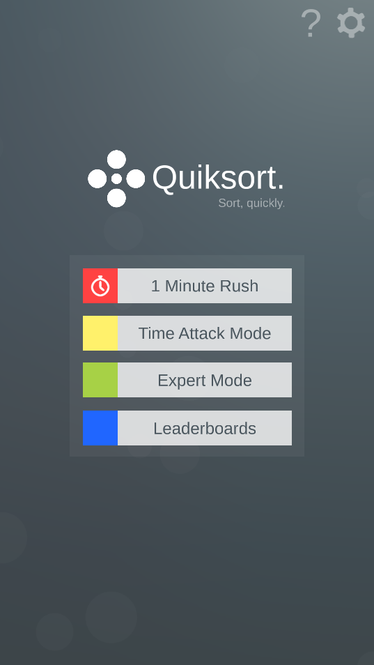
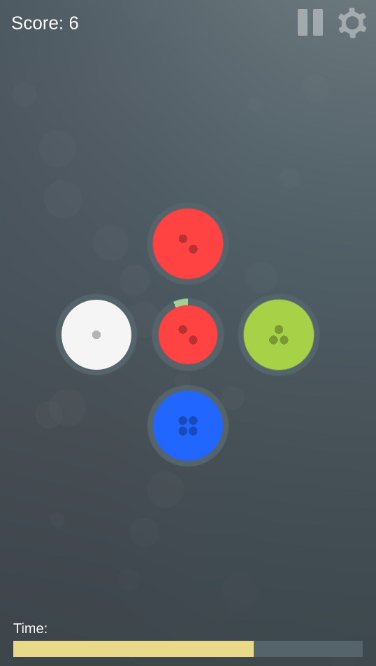

Quiksort
Project Status:
Current Version: v0.1.0-alpha
Contents
General Information
What is it?
A hyper-casual mobile app developed in Unity.
The premise of Quiksort is simple - sort, quickly. A sort object will appear in the middle, you have to tap the correct sort category.
You have only one objective - How far can you go?
Who made it?
The project and its artwork were all made by Grant Hardman.
What is it made with?
Quiksort is written in Unity with C#. Artwork was made in Krita.
What platforms will it be on?
It is designed to be released eventually on all Android and iOS platforms.
I currently don't own a Mac to develop for iOS, so that will come later.
It also runs perfectly well on a pc, but controlling the game with a mouse is much slower.
Game Modes
The game has 3 game modes
-
1 Minute Rush (Implemented)
- You have 1 minute to sort as many as you can.
- Correct sorts increase your score.
- Incorrect sorts decrease your score.
- The amount of time you have to sort each object is fixed at 3 seconds.
-
Time Attack (Planned)
- You start gently with 10 seconds on the clock.
- Correct sorts increase your time.
- Incorrect sorts decrease your time.
- The amount of time you have to sort each object is decreased over time.
-
Expert Mode (Planned)
- You start with only 2 sort colours.
- As you gain score you "level up" and the amount of sort categories increases.
- The sort categories go all the way upto 8 categories.
- The amount of time you have to sort each object is decreased over time.
- The amount of time you have to sort each object is increased slightly every time a new category is added. (Adjustment period)
- You have only 3 lives, 3 mistakes or timeouts and you're done!
Screenshots


To top ↑